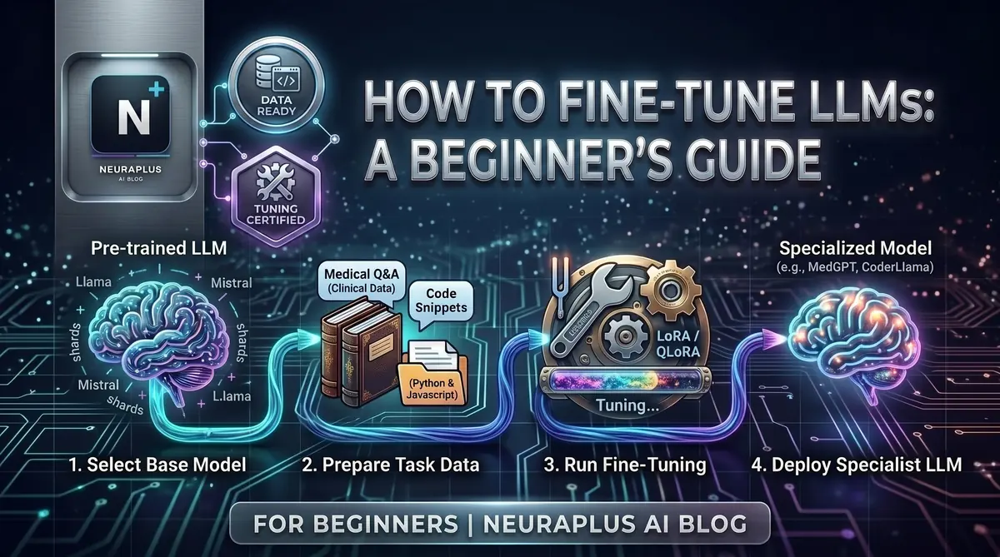

How to Fine-Tune LLM for Beginners: Complete 2026 Guide

Fine-tuning an LLM sounds like something only ML researchers do. It's not. In 2026, you can fine-tune your own custom AI model without a PhD, without expensive hardware, and without writing complex code from scratch.
I've helped hundreds of beginners do exactly this over the past two years. Here's everything you actually need to know — no fluff.
🎯 What You'll Learn: What fine-tuning is and why it matters, how to prepare training data, which models to choose, step-by-step fine-tuning process, evaluation techniques, deployment strategies, and real-world use cases.
What Fine-Tuning Actually Is
Think of it this way. You hire a brilliant generalist who knows everything about everything. But you need someone who knows your company, your products, your tone. You don't send them back to school — you train them on your specific stuff.
That's fine-tuning. You take a smart pre-trained model (Llama, Mistral, GPT-4o) and teach it your specific domain, style, or task. The general intelligence stays. The specialization gets added.
💡 Key Insight: Fine-tuning is like giving a smart employee specialized training for your company. You're not teaching them to read or think — you're teaching them your specific knowledge and skills.
Why Not Just Use Prompts?
Prompting works, but it has real limits. Fine-tuning gives you:
- Consistency: Predictable outputs every time, no long system prompts needed
- Cost savings: No massive context window on every API call
- Better quality: Stronger performance on specialized tasks
- Style control: Perfect for matching your brand voice or specific formats
That said — if your data changes constantly or you need to cite sources, RAG might serve you better. Fine-tuning shines when you need reliable, consistent outputs on a specific task.
Step 1: Pick Your Base Model
Two main paths here.
OpenAI API — Best for Beginners
No GPU needed, simple setup, automatic optimization. You just upload data and press go.
- GPT-4o-mini: Cheapest option, great for most tasks ($3/1M training tokens)
- GPT-4o: More capable, higher cost ($25/1M training tokens)
- Advantage: No hardware required, handles optimization automatically
- Downside: Can't see model weights, tied to their platform
Open-Source — Best for Control
If you want full ownership and the ability to run models locally:
- Llama 3.1 (8B/70B): Excellent all-around performance
- Mistral/Mixtral: Great efficiency and quality
- Qwen 2.5: Strong multilingual capabilities
- Phi-3: Small but surprisingly capable
For a detailed comparison, check our guide on the best open-source LLMs in 2026. For coding-specific needs, see the best LLMs for coding or our best Ollama models guide.
⚠️ Beginner Tip: Start with OpenAI's API if you're completely new. Learn the process first, then move to open-source once you understand what's actually happening under the hood.
Step 2: Prepare Your Training Data
This is where most beginners go wrong — and it's the most important step of all. A mediocre model trained on great data will outperform a great model trained on mediocre data. Every time.
How Much Data Do You Need?
| Examples | What to Expect |
|---|---|
| 50–100 | Basic customization, noticeable improvement |
| 500–1,000 | Strong, reliable outputs |
| 2,000–5,000 | Production-ready quality |
| 10,000+ | Expert-level performance |
Start with 100 solid examples. Don't obsess over scale until you've validated the approach works.
The Format: JSONL
Most platforms expect data in JSONL — one JSON object per line:
# Instruction-following example {"messages": [ {"role": "system", "content": "You are a customer support agent for TechCorp."}, {"role": "user", "content": "How do I reset my password?"}, {"role": "assistant", "content": "Go to techcorp.com/login, click Forgot Password, enter your email, and follow the link in your inbox."} ]} # Style/tone example {"messages": [ {"role": "user", "content": "Write a product description for wireless headphones"}, {"role": "assistant", "content": "🎧 Experience sound like never before. 40-hour battery life, active noise cancellation, crystal-clear audio. Premium comfort meets premium sound."} ]}
Data Quality Checklist
- ✓ Diversity: Cover different scenarios, not just easy cases
- ✓ Consistency: Similar inputs should get similar outputs
- ✓ Accuracy: Everything must be factually correct
- ✓ No duplicates: Remove identical or near-identical examples
- ✓ Balanced: Equal representation across categories/topics
🚨 Critical Warning: Never include passwords, API keys, or personal data in training data. Fine-tuned models can leak training data through clever prompts. Sanitize everything before you upload.
Step 3: Choose Your Fine-Tuning Method
Full fine-tuning updates every single weight in the model. Maximum performance, but requires 40GB+ GPU memory and costs hundreds to thousands per run. Not for beginners.
LoRA (Low-Rank Adaptation) adds small trainable layers while leaving most of the model frozen. Gets you 95% of full fine-tuning quality at about 10% of the cost. Needs 16–24GB VRAM.
QLoRA is LoRA plus quantization. Fine-tune a 70B model on a consumer GPU with 8–12GB VRAM. Small quality trade-off, massive cost savings.
💡 Beginner Recommendation: Start with LoRA. If you're using OpenAI's API, they handle all of this automatically — you don't need to think about it.
Step 4: Set Up and Train
Option A: OpenAI API (Easiest)
import openai # Upload training file file = openai.files.create( file=open("training_data.jsonl", "rb"), purpose="fine-tune" ) # Start the job job = openai.fine_tuning.jobs.create( training_file=file.id, model="gpt-4o-mini-2024-07-18", hyperparameters={"n_epochs": 3} ) print(f"Job ID: {job.id} | Status: {job.status}")
Option B: Open-Source with LoRA (Hugging Face)
# Install required libraries pip install transformers datasets peft bitsandbytes trl from transformers import AutoModelForCausalLM, AutoTokenizer from peft import LoraConfig, get_peft_model from trl import SFTTrainer model = AutoModelForCausalLM.from_pretrained("meta-llama/Llama-3.1-8B") tokenizer = AutoTokenizer.from_pretrained("meta-llama/Llama-3.1-8B") lora_config = LoraConfig( r=16, lora_alpha=32, target_modules=["q_proj", "v_proj"], lora_dropout=0.05, task_type="CAUSAL_LM" ) model = get_peft_model(model, lora_config) trainer = SFTTrainer(model=model, train_dataset=dataset, tokenizer=tokenizer, max_seq_length=512) trainer.train()
For a complete setup walkthrough, see our Ollama setup guide for beginners.
Hardware Reality Check
| Method | GPU Needed | Rough Cost |
|---|---|---|
| OpenAI API | None | $3–50 |
| QLoRA (7B model) | 8–12GB VRAM | $2–20/run |
| LoRA (7B model) | 16–24GB VRAM | $5–50/run |
| Full fine-tune (7B) | 40GB+ VRAM | $100–1,000+/run |
💰 No GPU? Use Google Colab (free), RunPod ($0.40/hr), or Lambda Labs ($0.50/hr). You can fine-tune a 7B model with LoRA for under $5 on these platforms.
Training Time Estimates
| Dataset | Model | Time |
|---|---|---|
| 100 examples | GPT-4o-mini via API | 10–30 min |
| 1,000 examples | Llama 3.1 8B, RTX 4090 | 1–2 hrs |
| 5,000 examples | Llama 3.1 8B, RTX 4090 | 4–6 hrs |
| 10,000 examples | Llama 3.1 70B, A100 | 12–24 hrs |
Step 5: Evaluate Before You Ship
Training finished doesn't mean your model is good. This step is non-negotiable.
What to check: Watch the loss curve — training loss should drop and flatten. If validation loss climbs while training loss drops, you're overfitting. Then test with real queries from your actual use case, not just things the model already saw. Have someone who doesn't know the model read the outputs and judge honestly.
# Test your fine-tuned model response = openai.chat.completions.create( model="ft:gpt-4o-mini-2024-07-18:your-org:custom-model:id", messages=[ {"role": "system", "content": "You are a helpful customer support assistant."}, {"role": "user", "content": "How do I reset my password?"} ] ) print(response.choices[0].message.content)
Common Problems and Fixes
| Problem | What You'll See | Fix |
|---|---|---|
| Overfitting | Great on training data, bad on new inputs | More diverse data, fewer epochs |
| Underfitting | Poor performance everywhere | More epochs, check data quality |
| Catastrophic forgetting | Loses general knowledge | Switch to LoRA, add general examples |
| Inconsistent outputs | Same question, wildly different answers | More examples, tighter consistency |
Step 6: Deploy It
OpenAI — Already Live
response = openai.chat.completions.create(
model="ft:gpt-4o-mini-2024-07-18:your-org:model-name:abc123",
messages=[{"role": "user", "content": "Your question here"}]
)
Open-Source Options
- Ollama — easiest for local deployment. See our Ollama models guide
- vLLM — high-performance production serving
- FastAPI + Transformers — for a fully custom API
Build AI Agents
Want to go further? Use your fine-tuned model as the brain of an AI agent. Our guide on how to build AI agents without coding walks you through the whole setup.
🚀 Pro Tip: Start with API deployment to validate your model works in practice. Move to self-hosting once you're confident — the cost savings at scale are significant.
Five Beginner Projects Worth Building
Customer support bot — 100–500 Q&A pairs from your support tickets. 1–2 days, $5–20.
Content writer — 50–200 examples of your best existing content. Outputs in your brand voice. 2–3 days, $10–30.
Code assistant — 200–1,000 code examples with explanations. 3–5 days, $20–50.
Document summarizer — 100–300 document-summary pairs in your preferred format. 1–2 days, $5–15.
Email responder — 100–500 email examples in your writing style. 2–3 days, $10–25.
Mistakes That Will Cost You Time
Bad data. This kills more fine-tuning projects than anything else. Spend 70% of your time on data prep — it's not glamorous, but it's where the actual work is.
Too few examples. Ten examples won't teach a model anything useful. Minimum 50, ideally 100+, before you start training.
Training too long. More epochs isn't always better. Watch your validation loss — when it stops dropping or starts rising, stop.
Skipping evaluation. Deploying without testing is how you end up with a broken model in production. Always test on data the model hasn't seen.
Sensitive data in training. Strip out passwords, API keys, personal information, anything confidential. Fine-tuned models can reproduce training data when prompted carefully.
Common Questions
Where to Start
Pick one small use case. Gather 100 clean examples. Run your first training job.
Your first model won't be perfect — that's fine. The point is understanding the process. Once you've done it once, the second time is much faster and the third time starts to feel easy.
The tools exist, the costs are manageable, and the community around this is genuinely helpful. There's no reason to wait.